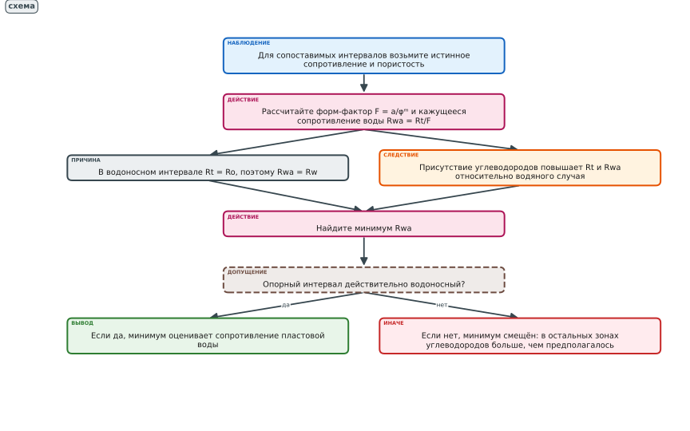

Стр. 129 · Apparent water resistivity ($R_{wa}$)
Recall from Chapter 1 that
Log InterpretationШаг 21 из 66
В книге: «Apparent water resistivity (Rwa)» стр. 129–130
Опирается на: шаг 18 «Что даёт быстрая оценка» (предпосылка), шаг 8 «Как оценить воду вдали от ствола» (предпосылка)
Водяная опора работает при условии полного водонасыщения.
Если сам минимум приходится на смесь, выводы об остальных зонах надо пересмотреть.
Пороговая идея. При полной водонасыщенности кажущееся сопротивление становится оценкой сопротивления самой воды. модель



Отделить исходное истинное сопротивление и пористость от вычисленного кажущегося сопротивления воды.
Допущения: Символьная схема сравнения без числовых значений и без привязки к конкретной скважине..
Форм-фактор связывает сопротивление полностью водонасыщенной породы с сопротивлением воды. Его рассчитывают как $F=a/\phi^m$. Тогда $R_w=R_o\phi^m/a$. В формуле кажущегося сопротивления берут истинное сопротивление: $R_{wa}=R_t\phi^m/a$. стр. 129
«Combining Equations 7.5 and 7.6, and solving for $R_w$ yields:»
«From Equation 7.7 above, define apparent water resistivity ($R_{wa}$) as:»
При полном водонасыщении истинное сопротивление породы равно сопротивлению полностью водонасыщенной породы. В водоносной зоне кажущееся сопротивление воды равно истинному сопротивлению пластовой воды. Углеводороды повышают и истинное сопротивление породы, и кажущуюся оценку воды относительно водяного случая. стр. 129
«When a given zone is water bearing, $R_t$ reverts to the water-bearing resistivity ($R_o$) and $R_{wa}$ equals $R_w$.»
«If the zone contains hydrocarbons, $R_t$ is greater than $R_o$, and $R_{wa}$ is greater than $R_w$.»
Авторы переносят минимум на сравниваемые зоны, предполагая, что опора водоносна. Если опорная зона содержит углеводороды, авторы считают их содержание в остальных зонах выше первоначальной оценки. стр. 129–130
«By comparing a number of zones (or different depths in the same zone, where a water-hydrocarbon contact is suspected) and assuming the zone with the lowest value of $R_{wa}$ is wet, the minimum value of $R_{wa}$ can be used as an estimate for the value of $R_w$ in all the zones being considered.»
«some hydrocarbons, then the other zones contain even more hydrocarbons than anticipated.»
Решение на данных
Считайте минимум оценкой сопротивления воды, если опорная зона водоносна. стр. 129–130
Если условие нарушено, пересмотрите вывод о других зонах.
Дано: Минимум найден в подтверждённой водоносной зоне. (модель)
В водоносной зоне кажущаяся и истинная оценки воды совпадают.
Дано: Опорная зона содержит смесь воды и углеводородов. (модель)
При углеводородах опорная оценка сопротивления воды повышается.
Сопротивление водонасыщенной породы стр. 129
| Обозначение | Что это | Единицы |
|---|---|---|
| $R_o$ | сопротивление водонасыщенной незатронутой зоны | — |
| $F$ | форм-фактор | — |
| $R_w$ | сопротивление пластовой воды | — |
Связь форм-фактора с пористостью стр. 129
| Обозначение | Что это | Единицы |
|---|---|---|
| $F$ | форм-фактор | — |
| $a$ | коэффициент в форм-факторе | — |
| $\phi$ | пористость | — |
| $m$ | показатель степени в форм-факторе | — |
Сопротивление воды водонасыщенной зоны стр. 129
| Обозначение | Что это | Единицы |
|---|---|---|
| $R_w$ | сопротивление пластовой воды | — |
| $R_o$ | сопротивление водонасыщенной незатронутой зоны | — |
| $\phi$ | пористость | — |
| $m$ | показатель степени в форм-факторе | — |
| $a$ | коэффициент в форм-факторе | — |
Кажущееся сопротивление воды стр. 129
| Обозначение | Что это | Единицы |
|---|---|---|
| $R_{wa}$ | кажущееся сопротивление воды | — |
| $R_t$ | истинное сопротивление | — |
| $\phi$ | пористость | — |
| $m$ | показатель степени в форм-факторе | — |
| $a$ | коэффициент в форм-факторе | — |
Истинное сопротивление и пористость → Расчёт кажущегося сопротивления воды.
Оценить базовое состояние по опорному минимуму.
Где аналогия перестаёт работать: Если опорная зона уже изменилась, смещение переносится на всю оценку.
Ссылки на уравнения в абзацах о выводе расходятся с номерами у видимых формул; связь можно проследить по символам.
Верный ответ: Она равна истинной
При полном заполнении пор водой истинное сопротивление совпадает с водным эталоном. Где это в тексте (стр. 129) →
Верный ответ: Истинное сопротивление породы; Кажущаяся оценка сопротивления воды
Оба показателя отличаются от водяного случая. Где это в тексте (стр. 129) →
Все утверждения шага с дословной цитатой автора и страницей книги (по PDF).
Сопротивление воды получают совместным использованием зависимости сопротивлений и форм-фактора. наблюдение
«Combining Equations 7.5 and 7.6, and solving for $R_w$ yields:»
Кажущееся сопротивление воды определяют по формуле с истинным сопротивлением. наблюдение
«From Equation 7.7 above, define apparent water resistivity ($R_{wa}$) as:»
Для водоносного интервала истинное сопротивление равно водонасыщенному, а кажущееся сопротивление воды — истинному сопротивлению воды. наблюдение
«When a given zone is water bearing, $R_t$ reverts to the water-bearing resistivity ($R_o$) and $R_{wa}$ equals $R_w$.»
Присутствие углеводородов в интервале повышает оба расчётных показателя относительно водяного случая. наблюдение
«If the zone contains hydrocarbons, $R_t$ is greater than $R_o$, and $R_{wa}$ is greater than $R_w$.»
Минимум служит оценкой сопротивления воды для всех сопоставляемых интервалов при допущении, что опорная зона водоносна. допущение
«By comparing a number of zones (or different depths in the same zone, where a water-hydrocarbon contact is suspected) and assuming the zone with the lowest value of $R_{wa}$ is wet, the minimum value of $R_{wa}$ can be used as an estimate for the value of $R_w$ in all the zones being considered.»
Если опорный минимум соответствует смеси с углеводородами, остальные зоны содержат их больше, чем предполагалось. вывод
«some hydrocarbons, then the other zones contain even more hydrocarbons than anticipated.»
Стр. 129 · Apparent water resistivity ($R_{wa}$)
Recall from Chapter 1 that
Стр. 129 · Apparent water resistivity ($R_{wa}$)
$$R_o = F \times R_w \tag{7.13}$$
Стр. 129 · Apparent water resistivity ($R_{wa}$)
and
Стр. 129 · Apparent water resistivity ($R_{wa}$)
$$F = \frac{a}{\phi^m} \tag{7.14}$$
Стр. 129 · Apparent water resistivity ($R_{wa}$)
Combining Equations 7.5 and 7.6, and solving for $R_w$ yields:
Стр. 129 · Apparent water resistivity ($R_{wa}$)
$$R_w = \frac{R_o \times \phi^m}{a} \tag{7.15}$$
Стр. 129 · Apparent water resistivity ($R_{wa}$)
From Equation 7.7 above, define apparent water resistivity ($R_{wa}$) as:
Стр. 129 · Apparent water resistivity ($R_{wa}$)
$$R_{wa} = \frac{R_t \times \phi^m}{a} \tag{7.16}$$
Стр. 129 · Apparent water resistivity ($R_{wa}$)
When a given zone is water bearing, $R_t$ reverts to the water-bearing resistivity ($R_o$) and $R_{wa}$ equals $R_w$. If the zone contains hydrocarbons, $R_t$ is greater than $R_o$, and $R_{wa}$ is greater than $R_w$. By comparing a number of zones (or different depths in the same zone, where a water-hydrocarbon contact is suspected) and assuming the zone with the lowest value of $R_{wa}$ is wet, the minimum value of $R_{wa}$ can be used as an estimate for the value of $R_w$ in all the zones being considered. If the zone with the minimum $R_{wa}$ value actually contains some hydrocarbons, then the other zones contain even more hydrocarbons than anticipated.
На этот шаг опираются: шаг 22 «Как найти водяную опору», шаг 23 «Какие параметры нужны для расчёта», шаг 28 «Сопротивление пласта с водой».
Почему минимум служит ориентиром
Ссылки в ответе ведут к исходному тексту.